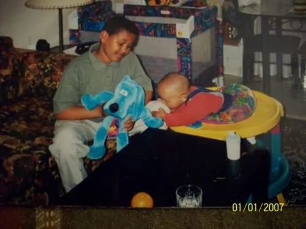
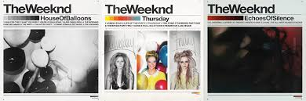
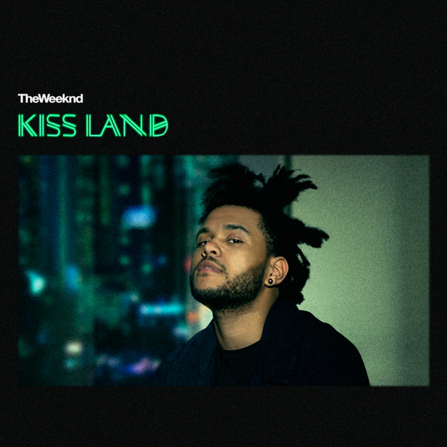
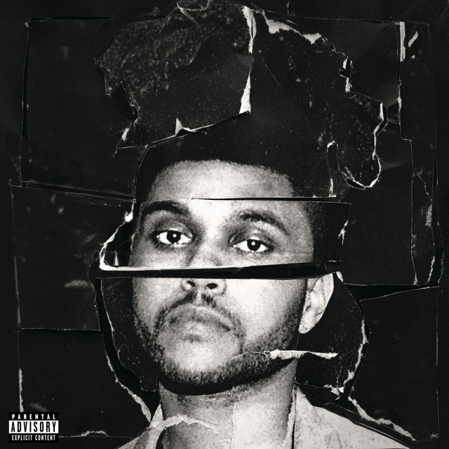
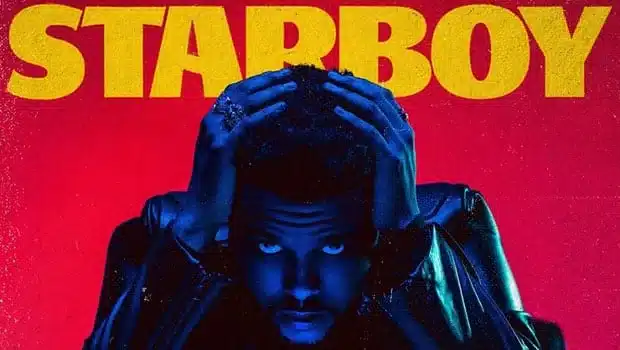
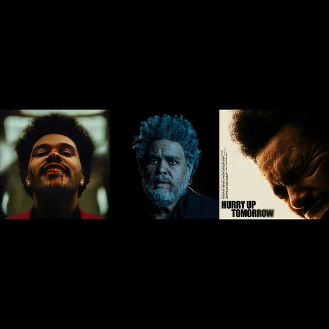

Primeros años
The Weeknd, cuyo nombre real es Abel Makkonen Tesfaye, nació el 16 de febrero de 1990 en Toronto, Canadá. Es hijo de inmigrantes etíopes que se establecieron en Canadá en la década de 1980. Desde joven mostró interés por la música, influenciado por géneros como el soul, el R&B, el pop y el hip hop. Su infancia no fue sencilla; creció en un entorno humilde y enfrentó problemas familiares y económicos. Abandonó la escuela secundaria y se mudó con amigos, etapa en la que comenzó a experimentar con su identidad artística.

Inicios en la música
En 2010, Tesfaye comenzó a subir canciones anónimamente a YouTube bajo el nombre “The Weeknd”. Rápidamente llamó la atención por su sonido oscuro, melancólico y emocional. En 2011 lanzó tres mixtapes: House of Balloons, Thursday y Echoes of Silence, los cuales recibieron elogios de la crítica por su producción experimental y letras introspectivas. Estos proyectos consolidaron su estilo único y lo posicionaron como una de las revelaciones del R&B alternativo.

Salto a la fama
En 2013, The Weeknd lanzó su primer álbum de estudio, Kiss Land, con una atmósfera cinematográfica y sonidos electrónicos oscuros. Sin embargo, su gran salto a la fama llegó con Beauty Behind the Madness (2015), que incluyó éxitos internacionales como “Can’t Feel My Face”, “The Hills” y “Earned It”, este último parte de la banda sonora de la película Cincuenta sombras de Grey. El álbum le valió varios premios y lo estableció como una figura mundial.


Consolidación internacional
En 2016 lanzó Starboy, un álbum que marcó una evolución sonora hacia un estilo más electrónico y pop, con colaboraciones de Daft Punk. El sencillo principal, “Starboy”, encabezó las listas mundiales. Posteriormente, en 2020, presentó After Hours, considerado uno de sus trabajos más aclamados. Canciones como “Blinding Lights” y “Save Your Tears” se convirtieron en himnos globales y consolidaron su posición como uno de los artistas más influyentes de la década.

Éxitos recientes
En 2022 lanzó Dawn FM, un álbum conceptual inspirado en una experiencia de “radio del purgatorio”, con influencias de los años 80 y una narrativa introspectiva sobre la vida y la muerte. Su sonido innovador y su visión artística lo llevaron a ser reconocido como uno de los artistas más creativos de su generación.
En 2025 lanzó Hurry Up Tomorrow, cierre de una trilogía que comenzó con After Hours y Dawn FM. Este proyecto muestra una madurez artística notable, combinando temas de redención, fama, amor y soledad. El álbum fue acompañado por una gira mundial y una innovadora experiencia visual para Apple Vision Pro.

Legado e impacto
The Weeknd ha sido una figura clave en la transformación del R&B contemporáneo, fusionando géneros y expandiendo los límites de la música pop. Con múltiples premios Grammy, reconocimientos internacionales y récords de ventas, su influencia se extiende más allá de la música, alcanzando la moda, el arte visual y la cultura popular. Es conocido por su estética misteriosa, su voz única y su habilidad para combinar lo emocional con lo comercial.
Además de su carrera musical, ha participado en proyectos cinematográficos y causas humanitarias, apoyando a organizaciones benéficas y defendiendo los derechos humanos. A lo largo de los años, The Weeknd ha demostrado ser no solo un artista de gran talento, sino también un creador con una profunda visión artística y compromiso social.